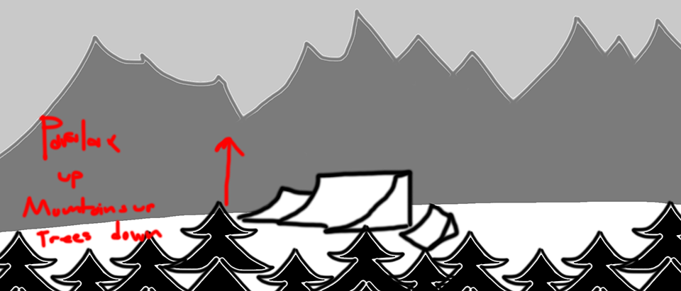
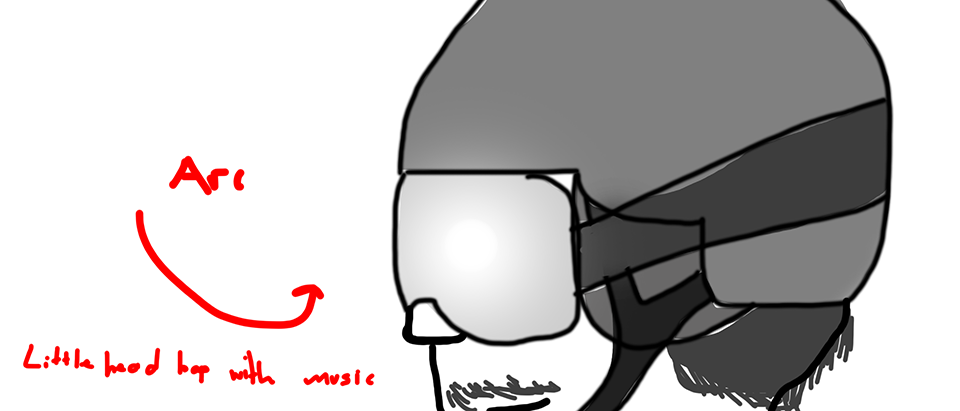
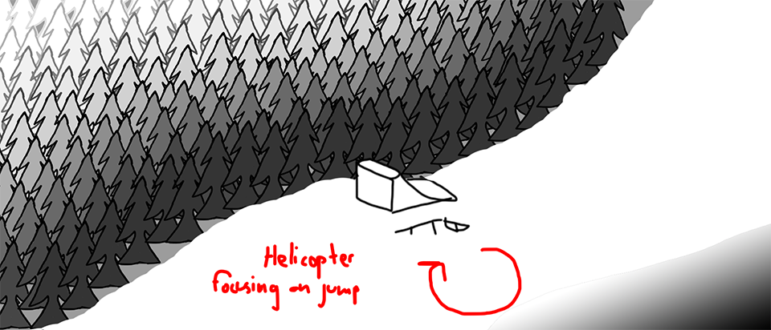

This idea would have included a lot of photography from cameras mounted under helicopters. While this is accurate to how some types of skiing area filmed, nowadays drones are used more. There is some overlap in how helicopters and drones film, but there are also distinct differences that I want to be mindful of. One of the things I've noticed about believable CG is the cinematography of the scene. If the camera could conceivably travel the way it's animated, it makes for a more natural shot. Of course there are exceptions to this, but I've noticed unrealistic camera moves have taken me out of a film's story many times.
This is the ending of the frame above.
After the establishing helicopter shot, I wanted to establish the skier in the short. In this shot I'd also introduce drums or some other consistent melody that would persist throughout the short. I'm not sure if I'd have the capacity to pull off a photoreal CG human in the time I have. Maybe a Metahuman + a Deepfake could help me get around this limitation. If I were to take that route, I'd prefer a 3/4 or head on view of the face, Deepfakes tend to fall apart in profile.
This is the final shot that I had boarded. I was most likely procrastinating doing some other homework and then it became more pressing and I stopped my storyboarding session. Anyways, in this shot the skier would be doing a trick while going off a jump in a terrain park. The helicopter would be circling the jump, but the camera would be locked to the jump. This would create some nice parallax due to the typically large focal lengths during helicopter photography.
I'd like to push myself and use USD to create this short. Since USD, Solaris, Arnold for Houdini (USD), and Karma have matured over the past couple of years, I consider them stable enough to work within. I'm still deliberating what render I want to use, but both are good picks for different reasons. By working in Solaris, I can work in more efficient ways that allow me finesse individual shots more. It also allows me to make sweeping changes in base models which will be propagated into every shot automatically. I can also continue to work on the new implementation of USD rendering on SCAD's renderfarm.
{kind=link}